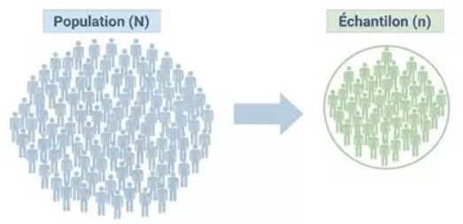
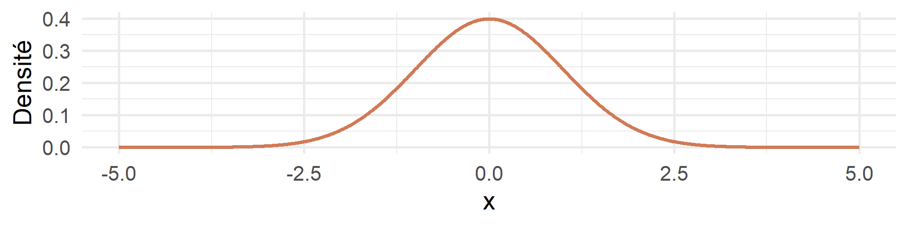
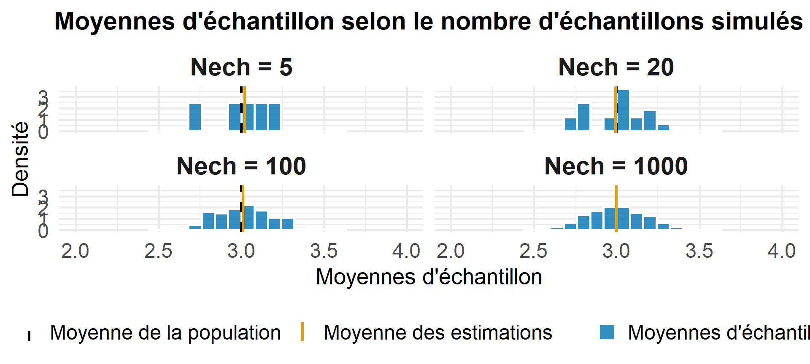
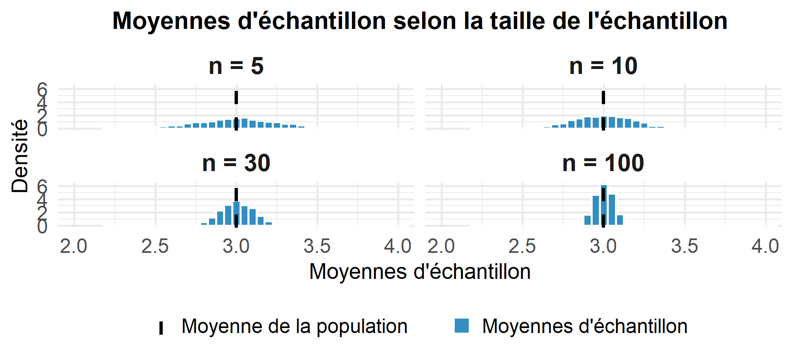
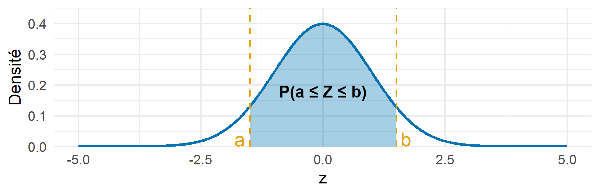
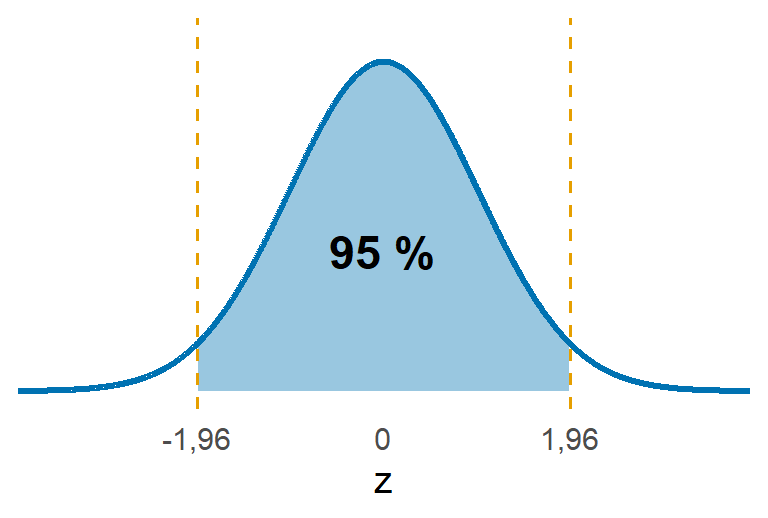
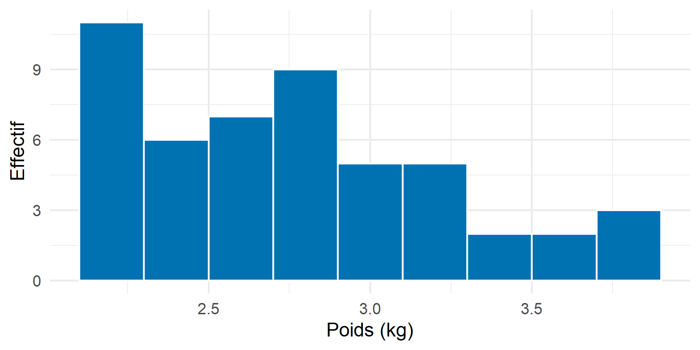
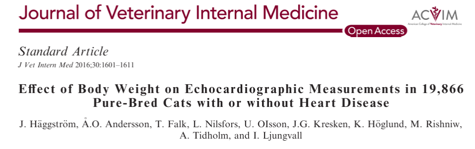

| Sex | Bwt | Hwt |
|---|---|---|
| F | 2.0 | 7.0 |
| F | 2.0 | 7.4 |
| F | 2.0 | 9.5 |
| F | 2.1 | 7.2 |
| F | 2.1 | 7.3 |
| F | 2.1 | 7.6 |
| F | 2.1 | 8.1 |
| F | 2.1 | 8.2 |
| F | 2.1 | 8.3 |
| F | 2.1 | 8.5 |
Les intervalles de confiance et de prédiction permettent de quantifier l’incertitude associée à l’estimation d’une caractéristique d’une population ou à la prédiction d’une nouvelle observation.
| Question de recherche | Méthode utilisée |
|---|---|
| Quel est le poids moyen des chats persans adulte et en bonne santé ? | Intervalle de confiance |
| Un propriétaire consulte pour un chiot Labrador de 4 mois. Dans quel intervalle peut-on prédire son poids à 6 mois à partir de données de croissance ? | Intervalle de prédiction |
| Vous étudiez deux traitements contre l’arthrose chez le chien. Quelle est la différence moyenne de réduction du score de douleur entre les deux traitements ? | Intervalle de confiance |
Warning
Intervalle de confiance et intervalle de prédiction ne sont pas interchangeables : l’un permet d’estimer un paramètre inconnu, tandis que l’autre permet d’encadrer une nouvelle observation.
Jeu de données utilisé : Mesures anatomiques chez \(144\) chats adultes, disponibles dans le package R MASS (Fisher 1947; Venables and Ripley 2002).
Sexe : Femelles (F), Mâles (M)
| Femelles | Males | |
|---|---|---|
| Nb. d’individus | 47 | 97 |
2 mesures morphologiques :
| Nom | Mesure | Unité |
|---|---|---|
| Bwt | Poids corporel | kg |
| Hwt | Poids du coeur | g |
| Sex | Bwt | Hwt |
|---|---|---|
| F | 2.0 | 7.0 |
| F | 2.0 | 7.4 |
| F | 2.0 | 9.5 |
| F | 2.1 | 7.2 |
| F | 2.1 | 7.3 |
| F | 2.1 | 7.6 |
| F | 2.1 | 8.1 |
| F | 2.1 | 8.2 |
| F | 2.1 | 8.3 |
| F | 2.1 | 8.5 |
Dans la suite, on va se concentrer uniquement sur le poids corporel (Bwt) de l’ensemble des chats.

Soit \(X\) une variable aléatoire (v.a.) décrivant la caractéristique étudiée (poids, taille, etc.) dans la population. On considère un échantillon \(X_1,\ldots,X_n\) de v.a. indépendantes et de même loi (que \(X\)), où \(X_i\) désigne la mesure sur le \(i\)-ème individu.
| Population (paramètre inconnu) | Échantillon (estimateur) | |
|---|---|---|
| Moyenne | \(\mu_\mathrm{pop} =\mathbb E(X)\) | \(\displaystyle M_\mathrm{ech} =\frac1n\sum_{i=1}^nX_i\) |
| Variance | \(\sigma^2_\mathrm{pop} =\operatorname{Var}(X)\) | \(\displaystyle S^2_\mathrm{ech} =\frac1{n-1}\sum_{i=1}^n(X_i-\mu_{\mathrm{ech}})^2\) |
On note \(x_1, \ldots, x_n\) les observations (réalisations de \(X_1,\ldots,X_n\)). A partir de ces dernières, on peut calculer \(\mu_\mathrm{ech}\) et \(s^2_\mathrm{ech}\) les estimations ponctuelles de \(\mu\) et de \(\sigma^2\).
| Notion | Application aux données de chats |
|---|---|
| Population | Les \(N = 144\) chats du jeu de données cats |
| Échantillon | Un sous-ensemble de chats tirés aléatoirement, de taille \(n\) |
| Variable aléatoire \(X\) | Poids corporel (en kg) |
| Moyenne \(\mu_{\mathrm{pop}}\) (inconnue) | Poids corporel moyen des \(N\) chats |
| Estimateur \(M_{\mathrm{ech}}\) | Moyenne empirique d’un échantillon de chats |
| Estimation ponctuelle \(\mu_{\mathrm{ech}}\) (calculée) | Moyenne calculée à partir des chats de l’échantillon |
| Variance \(\sigma_{\mathrm{pop}}^2\) (inconnue) | Variance des poids corporels des \(N\) chats |
| Estimateur \(S_{\mathrm{ech}}^2\) | Variance empirique corrigée d’un échantillon de chats |
| Estimation ponctuelle \(s_{\mathrm{ech}}^2\) (calculée) | Variance empirique corrigée calculée à partir des chats de l’échantillon |
Intervalle de confiance
Problème : Comment estimer une caractéristique inconnue d’une population à partir d’un échantillon ?
Objectif : Quantifier l’incertitude associée à cette estimation.
Intervalle de prédiction
Problème : Comment prévoir la valeur d’une caractéristique chez un nouvel individu ?
Objectif : Quantifier l’incertitude associée à cette prédiction.
Dans ce cours, on suppose que les observations sont indépendantes et suivent une loi normale.

Supposons qu’on cherche à estimer le poids moyen des \(144\) chats à partir de \(5\) échantillons aléatoires composés de \(5\) chats.
| \(x_1\) | \(x_2\) | \(x_3\) | \(x_4\) | \(x_5\) | \(\mu_{\mathrm{ech}}\) | |
|---|---|---|---|---|---|---|
| Échantillon 1 | 2.2 | 2.1 | 3.2 | 2.9 | 3.9 | 2.86 |
| Échantillon 2 | 3.2 | 2.8 | 2.8 | 3.8 | 2.8 | 3.08 |
| Échantillon 3 | 3.6 | 2.9 | 2.5 | 2.3 | 2.1 | 2.68 |
| Échantillon 4 | 3.6 | 2.6 | 2.7 | 2.9 | 3.0 | 2.96 |
| Échantillon 5 | 3.2 | 2.6 | 2.4 | 3.1 | 2.1 | 2.68 |
\(\boxed{ \mu_\mathrm{ech} = \frac1n\sum_{i=1}^n x_i}\)
Warning
La moyenne empirique varie d’un échantillon à un autre : il faut donner des marges d’erreurs.
Soit un échantillon \(X_1,\ldots,X_n\) de v.a. indépendantes et de même loi, d’espérance \(\mu_{\mathrm{pop}}\) et de variance \(\sigma_{\mathrm{pop}}^2\). On note \(\displaystyle M_\mathrm{ech} =\frac1n\sum_{i=1}^nX_i\) l’estimateur de la moyenne et \(\mu_\mathrm{ech}\) son estimation ponctuelle.
Espérance
\[ \mathbb E(M_{\mathrm{ech}})=\mu_{\mathrm{pop}} \]
Ecart-type
\[ \operatorname{sd}(M_{\mathrm{ech}}) =\frac{\sigma_{\mathrm{pop}}}{\sqrt n} \]


Théorème central limite (TCL) : Soit \(X_1,X_2,\ldots,X_n\) un échantillon de \(n\) valeurs tirées aléatoirement et indépendamment dans une population de moyenne \(\mu_{\mathrm{pop}}\) et d’écart-type \(\sigma_{\mathrm{pop}}\).
Alors, lorsque \(n\to+\infty\), la moyenne d’échantillon \(\displaystyle M_{\mathrm{ech}}=\frac{1}{n}\sum_{i=1}^{n}X_i\) vérifie :
\[ \mathbb P\left( a\leq \frac{M_{\mathrm{ech}}-\mu_{\mathrm{pop}}} {\sigma_{\mathrm{pop}}/\sqrt{n}} \leq b \right) \xrightarrow[n\to+\infty]{} \mathbb P(a\leq Z\leq b), \] où \(Z\sim\mathcal N(0,1)\).

\[ \frac{M_{\mathrm{ech}}-\mu_{\mathrm{pop}}} {\sigma_{\mathrm{pop}}/\sqrt n} \overset{\mathrm{approx.}}{\sim}\mathcal N(0,1). \]
\[ \mathbb P\left( a\leq\frac{M_{\mathrm{ech}}-\mu_{\mathrm{pop}}} {\sigma_{\mathrm{pop}}/\sqrt n}\leq b \right)\approx 1-\alpha. \]
\[ \mathbb P\left( \mu_{\mathrm{pop}}+a\frac{\sigma_{\mathrm{pop}}}{\sqrt n} \leq M_{\mathrm{ech}}\leq \mu_{\mathrm{pop}}+b\frac{\sigma_{\mathrm{pop}}}{\sqrt n} \right)\approx 1-\alpha. \]
Et finalement,
valeurs de \(a\) et \(b\) par niveau de confiance :
| \(1-\alpha\) | \(a\) | \(b\) |
|---|---|---|
| 95 % | \(-1{,}96\) | \(1{,}96\) |
| 99 % | \(-2{,}576\) | \(2{,}576\) |

\[ \color{#0072B2}{ \boxed{ IF_{95\%}= \left[ \mu_{\mathrm{pop}}-1{,}96\frac{\sigma_{\mathrm{pop}}}{\sqrt n} \,;\, \mu_{\mathrm{pop}}+1{,}96\frac{\sigma_{\mathrm{pop}}}{\sqrt n} \right] } } \]
Objectif : Encadrer la moyenne inconnue \(\mu_\mathrm{obs}\) à partir de la moyenne empirique calculée sur les observations \(\mu_\mathrm{ech}\).
\[ \color{#0072B2}{\boxed{ IC_{95\%}= \left[ \mu_{\mathrm{ech}}-1{,}96\frac{\sigma_{\mathrm{pop}}}{\sqrt n} \,;\, \mu_{\mathrm{ech}}+1{,}96\frac{\sigma_{\mathrm{pop}}}{\sqrt n} \right] }} \]
\[ \color{#D17A57}{ \boxed{ IC_{95\%}= \left[ \mu_{\mathrm{ech}}-t_{0{,}975,n-1}\frac{s_{\mathrm{ech}}}{\sqrt n} \,;\, \mu_{\mathrm{ech}}+t_{0{,}975,n-1}\frac{s_{\mathrm{ech}}}{\sqrt n} \right] }} \]
Interprétation
Sur un grand nombre d’échantillons indépendants, environ 95 % des IC construits contiendraient la véritable moyenne \(\mu_{\mathrm{pop}}\).
On tire un échantillon de \(50\) chats parmi les \(144\).
\[ \mu_{\mathrm{ech}} =\frac{1}{50}\sum_{i=1}^{50}x_i = 2.628 \]
\[ s_{\mathrm{ech}} =\sqrt{\frac{1}{49}\sum_{i=1}^{50}(x_i-\mu_{\mathrm{ech}})^2} = 0.469 \]
\[ t_{0{,}975;49}=2.001 \]
\[ IC_{95\%}\approx \left[ \mu_{\mathrm{ech}}- t_{0{,}975;49}\frac{s_{\mathrm{ech}}}{\sqrt{50}} \sqrt{\frac{94}{143}} \,;\, \mu_{\mathrm{ech}}+ t_{0{,}975;49}\frac{s_{\mathrm{ech}}}{\sqrt{50}} \sqrt{\frac{94}{143}} \right] = \boxed{[2{,}688\,;\,2{,}912] \ \mathrm{kg}} \]
Objectif : Prédire le poids d’un nouveau chat, noté \(X_{\mathrm{new}}\), à partir de notre échantillon \(X_1, \ldots, X_n\).
Incertitude sur la moyenne estimée
\[ \operatorname{Var}(M_{\mathrm{ech}}) =\frac{\sigma_{\mathrm{pop}}^2}{n} \]
\(\Longrightarrow\) la moyenne de l’échantillon varie d’un échantillon à l’autre.
Variabilité individuelle
\[ \operatorname{Var}(X_{\mathrm{new}}) =\sigma_{\mathrm{pop}}^2 \]
\(\Longrightarrow\) les valeurs individuelles varient autour de la moyenne de la population.
\[ \boxed{\operatorname{Var}(X_{\mathrm{new}}-M_{\mathrm{ech}}) = \sigma_{\mathrm{pop}}^2+ \frac{\sigma_{\mathrm{pop}}^2}{n} = \sigma_{\mathrm{pop}}^2\left(1+\frac{1}{n}\right)} \]
Plutôt que de prédire une valeur exacte, on cherche un intervalle dans lequel le poids du nouveau chat pourrait se situer.
D’après les propriétés de la loi normale, on a :
\[ \frac{X_{\mathrm{new}}-M_{\mathrm{ech}}} {\sigma_{\mathrm{pop}}\sqrt{1+\frac{1}{n}}} \sim\mathcal N(0,1). \]
On cherche \(a\) et \(b\) tels que :
\[ \mathbb P\left( a\leq \frac{X_{\mathrm{new}}-M_{\mathrm{ech}}} {\sigma_{\mathrm{pop}}\sqrt{1+\frac{1}{n}}} \leq b \right)=1-\alpha. \]
En réarrangeant les inéquations, on obtient :
\[ \mathbb P\left( M_{\mathrm{ech}}+a\,\sigma_{\mathrm{pop}}\sqrt{1+\frac{1}{n}} \leq X_{\mathrm{new}}\leq M_{\mathrm{ech}}+b\,\sigma_{\mathrm{pop}}\sqrt{1+\frac{1}{n}} \right)=1-\alpha. \]
D’où :
\(\sigma_{\mathrm{pop}}\) connu :
\[ \color{#0072B2}{ \boxed{ IP_{95\%} = \mu_{\mathrm{ech}} \pm 1{,}96\,\sigma_{\mathrm{pop}} \sqrt{1+\frac{1}{n}} }} \]
\(\sigma_{\mathrm{pop}}\) inconnu :
\[ \color{#D17A57}{ \boxed{ IP_{95\%} = \mu_{\mathrm{ech}} \pm t_{0{,}975,n-1}\,s_{\mathrm{ech}} \sqrt{1+\frac{1}{n}} }} \]
À partir de notre échantillon de \(50\) chats, on souhaite prédire le poids d’un nouveau chat.
\[ \mu_{\mathrm{ech}}=2.8\ \mathrm{kg} \]
\[ s_{\mathrm{ech}}=0.487\ \mathrm{kg} \]
\[ t_{0{,}975;49}=2.01 \]
\[ m=t_{0{,}975;49}\,s_{\mathrm{ech}} \sqrt{1+\frac{1}{50}} =0.988 \]
\[ IP_{95\%}= \left[ \mu_{\mathrm{ech}}- t_{0{,}975;49}s_{\mathrm{ech}}\sqrt{1+\frac{1}{50}} \,;\, \mu_{\mathrm{ech}}+ t_{0{,}975;49}s_{\mathrm{ech}}\sqrt{1+\frac{1}{50}} \right] = \color{#D17A57}{ \boxed{ [1.812\,;\,3.788]\ \mathrm{kg} }} \]
Important
Dans ce cours, on utilise beaucoup la formulation “pour \(n\) grand”, mais en pratique à partir de quelle taille \(n\) est-il vraiment grand ?
⁉️ Il n’y a pas de réponse universelle à cette question, tout dépend du problème ⁉️
| Valeur de \(n\) | Suffisant ou non ? |
|---|---|
| 10 | ❌ |
| 20 | ❌ |
| 30 | ça peut aller |
| 45 | ça peut aller |
| 50 | ✅ |
| 100 et + | ✅ |
Tip
Dans tous les cas, on attend une vision critique du nombre d’observations disponibles.
To Do :
Tirage aléatoire d’un échantillon et visualisation des données
Calcul des estimations ponctuelles : moyenne et écart-type
Construction des intervalles de confiance et de prédiction à 95 %
# Tirage de 50 chats parmi les 144
set.seed(123)
echantillon <- cats[
sample(nrow(cats), 50, replace = FALSE),
]
# Histogramme des poids
ggplot(echantillon, aes(x = Bwt)) +
geom_histogram(
binwidth = 0.2,
fill = "#0072B2",
color = "white"
) +
labs(
x = "Poids (kg)",
y = "Effectif"
) +
theme_minimal(base_size = 20)
# IC à 95 % avec correction de population finie
n <- nrow(echantillon)
N <- nrow(cats)
mu_ech <- mean(echantillon$Bwt)
s_ech <- sd(echantillon$Bwt)
t_crit <- qt(0.975, df = n - 1)
correction <- sqrt((N - n) / (N - 1))
IC <- mu_ech + c(-1, 1) *
t_crit * s_ech / sqrt(n) * correction
# IP à 95 % : formule du modèle i.i.d. normal
IP <- mu_ech + c(-1, 1) *
t_crit * s_ech * sqrt(1 + 1/n)
IC
IPSortie :
IC à 95 % : 2.688 2.912 kgIP à 95 % : 1.812 3.788 kg\[
IC_{95\%}\approx
[2.688\,;\,2.912]\ \mathrm{kg}
\]
\[ IP_{95\%}\approx [1.812\,;\,3.788]\ \mathrm{kg} \]
Note
L’intervalle de prédiction est plus large que l’intervalle de confiance car il tient compte de la variabilité individuelle.
Utilisations principales :
Estimer une caractéristique inconnue de la population - Quel est le poids moyen des chats de la population ?
\(\longrightarrow\) Construction d’un intervalle de confiance.
Prédire la valeur d’une nouvelle observation - Quel sera le poids d’un nouveau chat ?
\(\longrightarrow\) Construction d’un intervalle de prédiction.
Exemple issu de : Häggström et al. (2016)

Note
Dans la régression linéaire présentée dans cet article on s’intéresse à la question : La production de lait en début de lactation permet-elle d’expliquer la production de lait sur l’ensemble de la lactation ?
Intervalle de confiance (IC)
Objectif : Encadrer la moyenne de la population.
\[ \color{#0072B2}{ \boxed{ IC_{95\%}= \mu_{\mathrm{ech}}\pm 1{,}96\frac{\sigma_{\mathrm{pop}}}{\sqrt n} }} \]
\[ \color{#D17A57}{ \boxed{ IC_{95\%}= \mu_{\mathrm{ech}}\pm t_{0{,}975,n-1}\frac{s_{\mathrm{ech}}}{\sqrt n} }} \]
Intervalle de prédiction (IP)
Objectif : Encadrer la prédiction d’une nouvelle observation.
\[ \color{#0072B2}{ \boxed{ IP_{95\%}= \mu_{\mathrm{ech}}\pm 1{,}96\,\sigma_{\mathrm{pop}} \sqrt{1+\frac1n} }} \]
\[ \color{#D17A57}{ \boxed{ IP_{95\%}= \mu_{\mathrm{ech}}\pm t_{0{,}975,n-1}s_{\mathrm{ech}} \sqrt{1+\frac1n} }} \]
📌 programme du prochain cours : Tests d’hypothèses